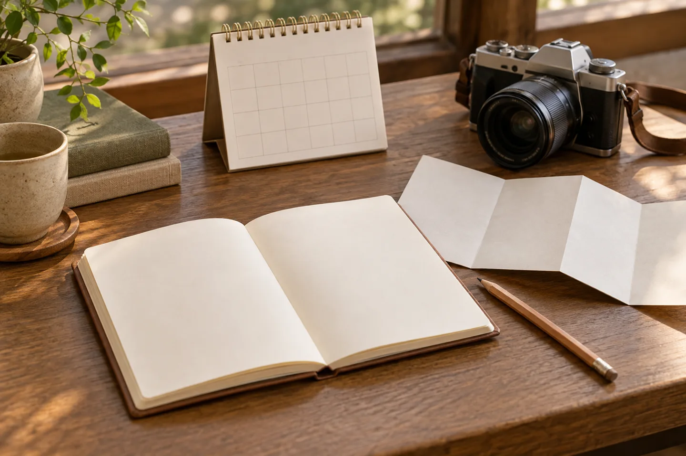
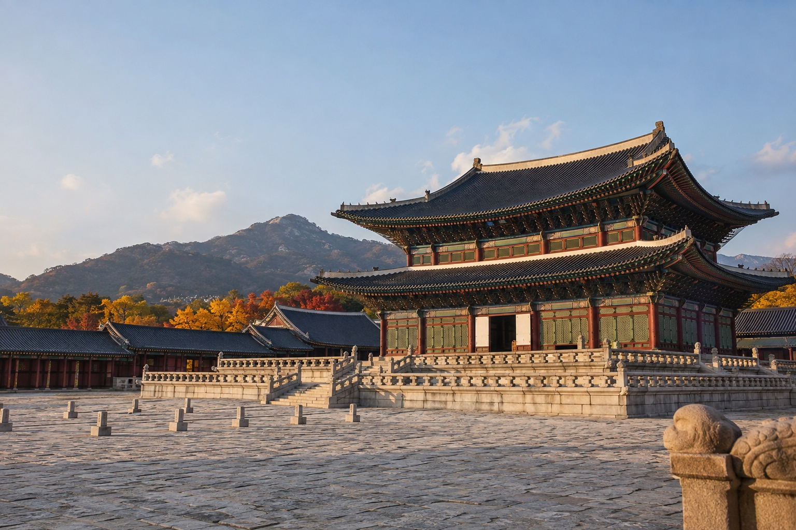
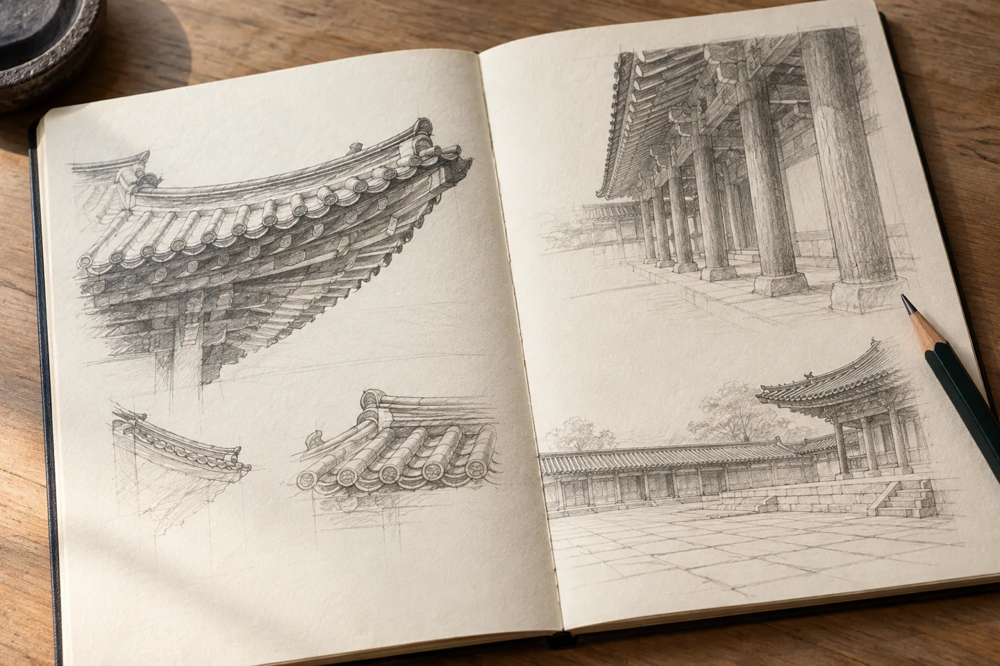
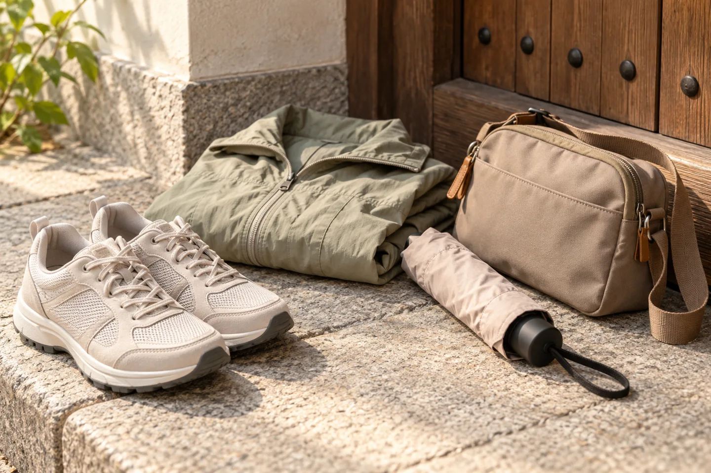

A palace afternoon in November needs a different timetable from a summer visit. This short guide builds on our Seoul essentials page with a specific question: how can you give Gyeongbokgung enough time before the earlier seasonal closing? These are planning suggestions, not a personal visit diary.
Use the November timetable.

The Korea Tourism Organization lists November through February opening hours as 09:00–17:00, with last admission at 16:00. Tuesday is the normal closing day. When Tuesday is a public holiday, the listing says the palace closes on the following business day instead. Recheck your exact date before making bookings around it.
Last admission is a deadline, not a suggested arrival time. Decide when you want to leave, then allow room for entry and the parts of the grounds you want to see. An earlier arrival gives you more flexibility if your journey takes longer than expected.
Korea Tourism Organization — seasonal hours and closing days ↗
Let the visit have a manageable scale.

Gyeongbokgung was established in 1395 as a royal palace of the Joseon dynasty. That long history gives the visit a useful starting point, but you do not need to treat an afternoon as a test of how many buildings you can cover.
At the entrance, use the current visitor map and signs to choose a short route. Leave more room for one area that interests you. Do not use the illustration above to find a gate or identify a building: it is an imagined scene.
Keep one visual question in mind.

Try a simple observation exercise: look at how a roof edge meets the sky, then compare that line with a second view. Or notice the repeated spacing of columns before studying a smaller painted detail. These are ways of looking, rather than claims about a particular building’s symbolism.
A photograph or a few words in a notebook can record that comparison. Pause where you can keep a passage clear, and follow the site’s current rules for photography and access. You can leave with one well-remembered detail instead of a hurried checklist.
Plan the next stop as carefully as this one.

Check the forecast before choosing layers and rain protection. Wear shoes you already find comfortable. If you rent hanbok, confirm the return time and allow enough time to change; the rental schedule is separate from palace admission.
Leave a buffer before a meal reservation, train or other commitment. If you are considering a nearby museum afterward, check that museum’s own hours and admission details rather than assuming it follows the palace timetable.
Before you set off
- Check whether the palace is open on your chosen date.
- Work backward from the seasonal closing time.
- Choose a small route using the on-site map.
- Check the weather and any separate rental or museum arrangements.
Practical hours and historical context checked on November 7, 2026 against the Korea Tourism Organization’s Gyeongbokgung listing. Special closures and arrangements can change; use the linked official information before travelling. The remaining suggestions are editorial planning ideas.
All four illustrations were previously created for this site and visually reviewed for reuse. They do not document a visit, actual current facilities, weather or foliage.